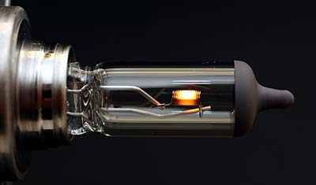
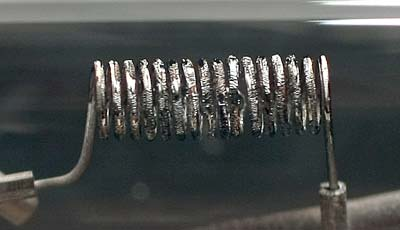
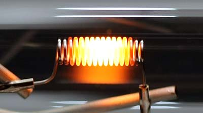
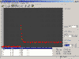
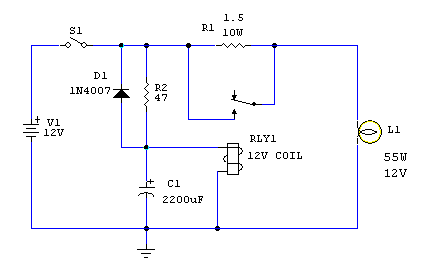
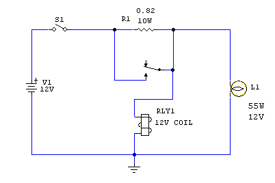

Batteries & energy
How to increase the lifespan of car lamps
"DIY" by R.Chirio
Page index
Considerations
March 2009

We saw how much does it cost to keep the car lights on all the time, now to reduce costs, we can easily increase the duration of the same auto lamps.

It is easily noted that often one of the two main lamps burns out first or at least lasts noticeably less than the lamp on the opposite side.
This is due to the wiring; one of the two lamps has a longer electrical circuit, meaning one of the two lamps is powered through one and a half meters of electrical cable that acts as a resistor limiting the maximum current that can reach the lamp filament.

Typically all halogen filament lamps burn at the moment of turn-on since the transition from off to incandescent involves a current peak that at the maximum level can reach up to 10 times the rated current, which we recall for a 55W lamp is between 4 and 5A depending on whether the engine is off or on. So we can have a pulse that can reach even 40A during the first few milliseconds that the lamp reaches operating temperature, achieving maximum brightness.

To improve lamp life, even 3-5 times, it is necessary to limit the inrush current, bringing the maximum start current to the nominal operating value.
The first very simple solution is to extend the wiring cables so that the cables themselves limit the current creating minimal voltage drop during operation.
The better solution is the timed circuit that through a relay limits the start-up current with a specific resistor, which after 0.5 sec is switched out and the lamp operates under normal conditions.
Third solution the current is limited through a PWM circuit that proportionally feeds the lamp at limited current during the power-on phase.
Data detected
Peak current measurement.
- Lamp H3 55W
- Battery 12V 38Ah
- Cabling tot. 1.5mt cable 1.5mmq
- Shunt 70mV 20A
Maximum value read equal to 135.2mV corresponding to 38.57A max.

Solution with copper wire in series.
It's decided that 0.5 V loss in series with the lamp is acceptable for the light drop, 0.5 V with a nominal current of 4.4 A corresponds to a resistance of 0.50/4.4 = 0.113 OHM
Using 1.0mmq cable which has a resistance of 20.6ohm/km to get 0.113 ohm we must use 5.48 m of cable for each lamp.
Furthermore by reducing the working voltage, we obtain a further advantage for the purpose of lamp life duration.
With this simple solution it is conceivable to double the life of the lamp.
{kind=link}
Relay solution.

circuit diagram delayed relay.
{kind=link}
The relay is energized through the time constant given by R2 and C1 which determine a delay closure of approximately 0.5 sec., the inrush current is therefore limited by the R1 of 1.5 ohm which reduces the peak from approximately 40A to only 15A.
The D1 diode serves to quickly discharge the electrolytic capacitor.
The value of R2 must be 20% of the ohmic value of the relay coil.
For high reliability I recommend using a 70A Siemens relay suitable for heavy loads, we will have the guarantee of long operation.

circuit diagram simplified delayed relay
The relay is energized only when the voltage on the lamp exceeds 7-9V, therefore after a certain delay due to current limiting due to R1, test the best solution by varying the resistance value.
PWM solution with Arduino (March 2012)
{kind=link}
With this circuit, the car light control is complete, as we can control the low beams, high beams and fog lights, also to reduce currents the control is for each individual lamp.
- Each lamp is turned on with a delay of about 500ms after the command is given on its respective input. The PWM thus goes from 0 to 100%.
- It is also possible to automatically turn on the crossover lights (dipped beam) using a photoresistor sensor that detects ambient brightness.
- Thanks again to the photoresistor it's possible to control daytime power consumption reduction to only 60-70% PWM since during the day it's important that the headlights are visible but don't necessarily have to produce light.
- With the S0 switch it is possible to activate daytime saving at 70% PWM, the function is activated after 15 sec of daylight present.
- With switch S1 it's possible to activate automatic ignition or assign other control functions.
- The 12V input command is reduced to 4.7V through the zener divider.
- For convenience on the output only one lamp is shown in the circuit diagram but in practice each mosfet must be connected to its respective lamp.
The photoresistor must be positioned where it does not pick up light interference from passing vehicles.
....
Remember that this and the other circuit diagrams should be for experimental study only, it is not permitted to install unapproved devices on vehicles!
Final remarks:
Simple solutions really allow a significant increase in the life of automobile lamps to the advantage of maintenance costs.
- It can be stated that the Arduino solution allows extending lamp life to 4-6 times normal, so in many cases replacing lamps is no longer an issue.
© Roberto Chirio: all rights reserved.